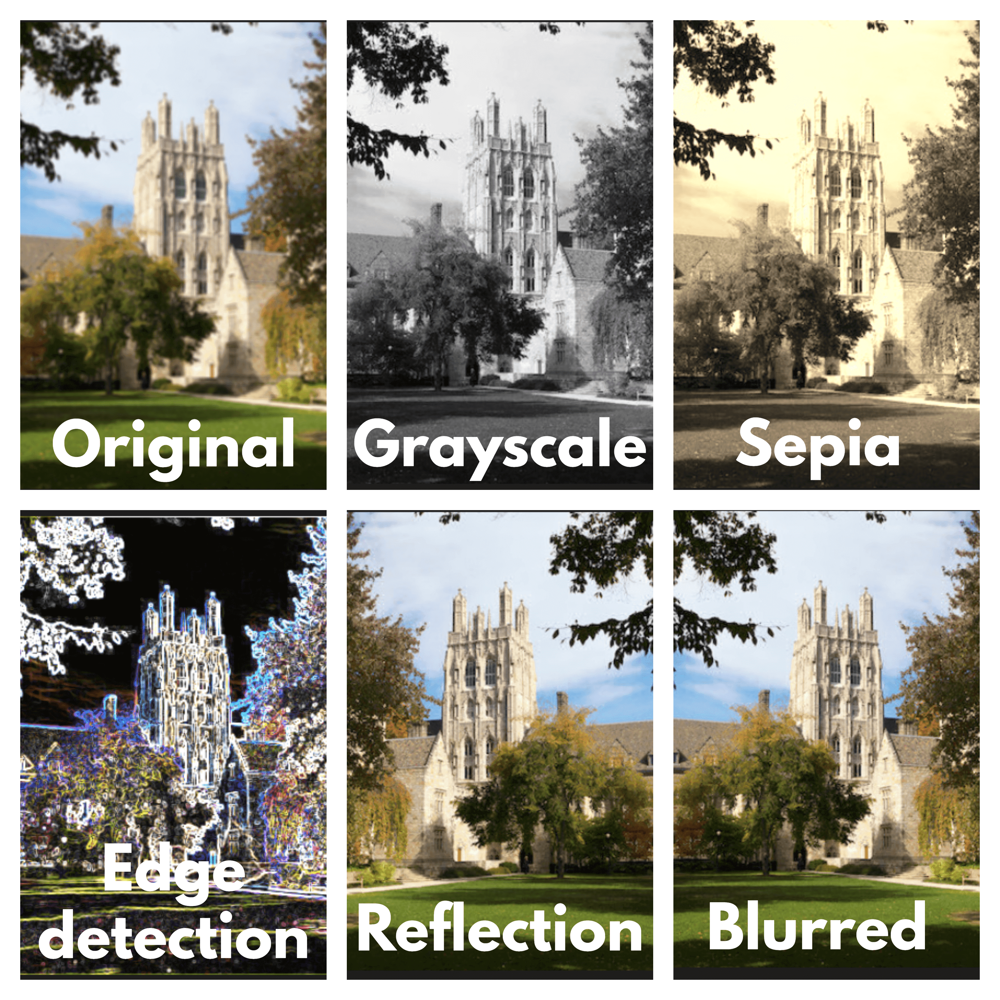
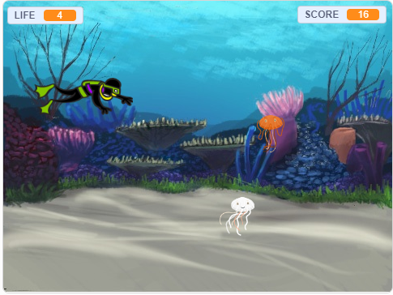
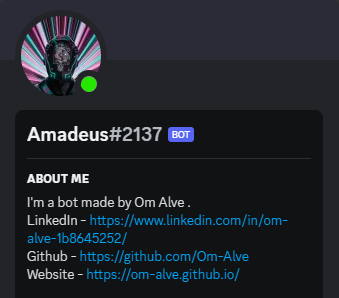
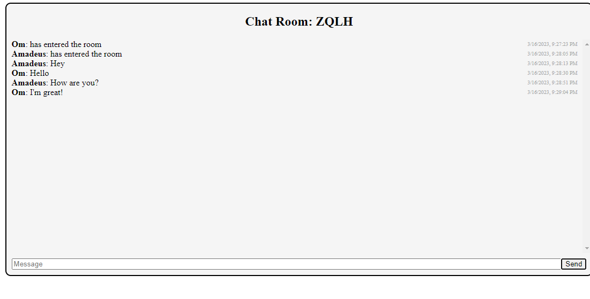
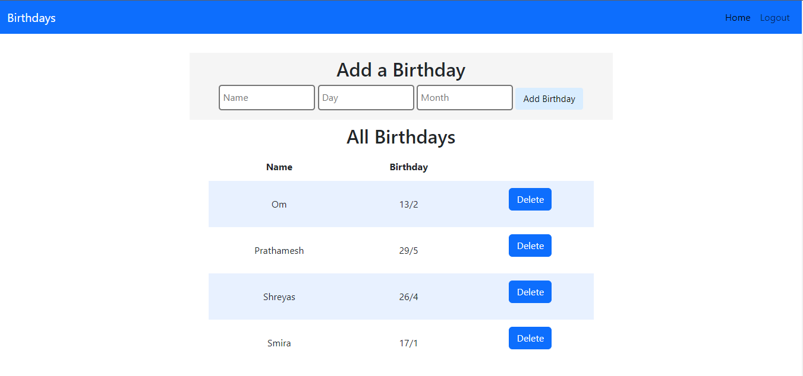

Hi I'm Om
A student at VIT Mumbai
I am currently pursuing my Bachelors of Technology in Information
technology. I enjoy learning new technologies and implementing them
to solve real-world problems. I can be relied upon to help your
company achieve its goals by providing sustainable and scalable
solutions.

My Techstack
C++
CSS 3
Flask
HTML5
Java
JavaScript
Python
Git
My Projects
Filters
The Filter project is a program that applies various filters to
bitmap images (BMP) using command-line arguments. The program
allows the user to apply five different filters: Grayscale,
Sepia, Edge Detection, Blur, and Reflection. The program can be
executed using the command "./filter -(initial letter of filter)
Input_image_name.bmp Output_image_name.bmp". The program
validates the input filter flag and ensures that only one filter
is applied at a time. It also checks if the user has entered the
correct number of arguments. The program then reads the input
BMP file, validates its format, and stores the image's
dimensions and pixel values in memory. After that, it applies
the selected filter to the image and writes the modified pixel
values to the output BMP file.

Ocean Trouble

Ocean Trouble is a fun and exciting game made with Scratch. In
this game, you are a scuba diver who is trying to navigate
through the ocean while avoiding jellyfish. The game is simple
to play and requires only the use of the arrow keys. The goal of
the game is to keep the scuba diver safe by avoiding the
jellyfishes that come in your path. To do this, you must move
the diver up, down, left, and right using the arrow keys. You
will need to be quick and nimble to avoid the jellyfish, which
will move at varying speeds
Amadeus
Amadeus is a multi-functional discord bot created with Python
and discord.py library. It was inspired by the shut down of the
music bot 'rhythm' and developed by me using the knowledge
gained from CS50. It has features like translation, QRcode
generation, and anime search. Amadeus can send welcome messages
to new members and respond to both normal messages and commands.
It uses Daki bot hosting and its source code is on GitHub. The
bot code is divided into different files with specific
functions. The chatbot feature is limited to avoid interfering
with user conversations, but I plan to make it AI-based in the
future. Amadeus is a versatile bot that can enhance the discord
experience for users.

Chatroom

This chatroom app is designed to allow users to easily connect
with each other and engage in real-time conversations. It is
built using Flask and Flask-SocketIO, which allows for fast and
efficient communication between users. Upon launching the app,
users can create a new chat room with a randomly generated code
or enter an existing one by providing the code. Once inside the
chat room, users can send messages to the group and view
messages sent by other users in real-time. This creates an
immersive and engaging environment that encourages users to
actively participate in the conversation.
Birthday Tracker app
Birthday Tracker is a user-friendly Flask-based web app that
simplifies birthday management. Stay organized and never forget
important dates with its intuitive interface. Add, view, and
manage birthdays effortlessly. Built with Flask and essential
extensions, Birthday Tracker ensures seamless user experience
and efficient data management. Say goodbye to birthday-related
stress and celebrate life's special moments hassle-free with
Birthday Tracker.

TicTacToe AI

This Python-based Tic-Tac-Toe game, developed with Pygame, offers a delightful gaming experience. Players
can choose their preferred symbol, either X or O, and engage in exciting matches against an intelligent AI
opponent. The game incorporates the powerful minimax algorithm, ensuring that the AI makes optimal moves
to challenge the player.